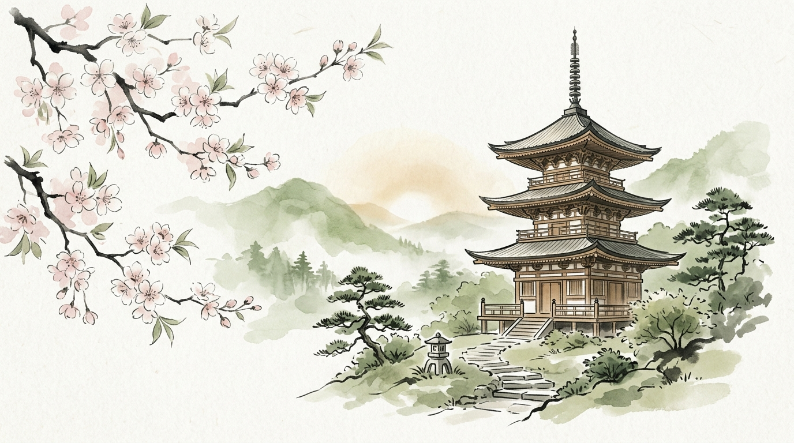

Langkah Pertama: Vokal & Konsonan
Pelajari dasar 46 karakter Hiragana mulai dari vokal dasar hingga pembentukan kata sederhana sehari-hari.
65% Selesai
あ
★★★
1. Vokal Dasar
か
★★★
2. Baris Ka
さ
★★☆
3. Baris Sa
🎁
Peti Koin Mon
な
5. Baris Na
🔒
6. Angka 1-10
💎
Peti Magatama
⛩️
Checkpoint Torii
Menjelajah Katakana & Nama Benda
Kuasai huruf Katakana untuk membaca menu restoran, nama kota dunia, dan teknologi terkini.
Terkunci (Selesaikan Unit 1)
ア
Unit 2 • Katakana